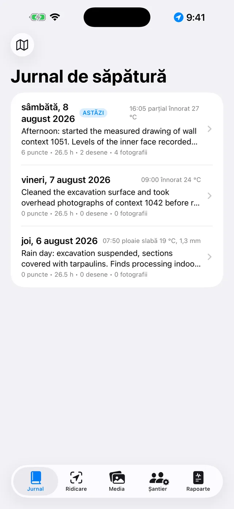
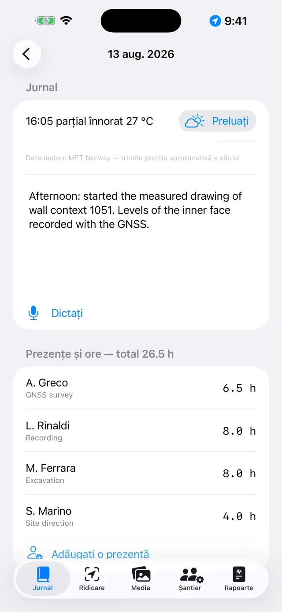
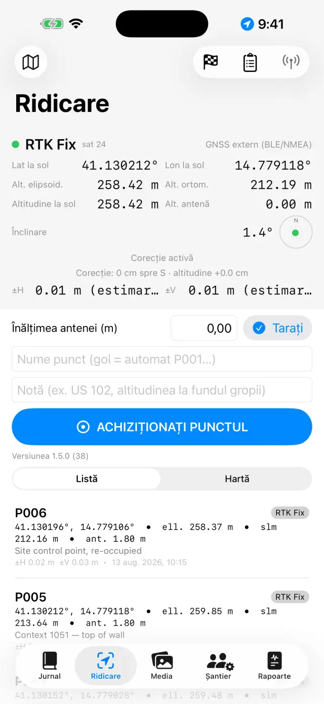
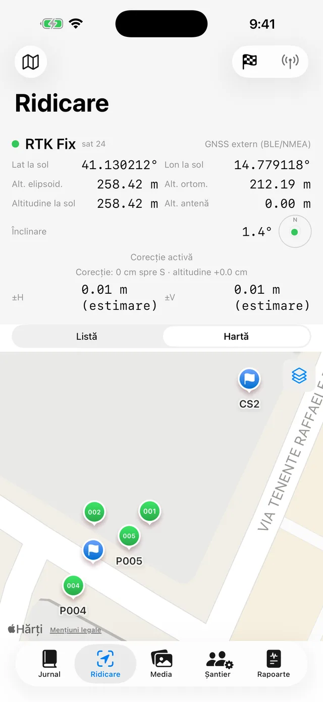
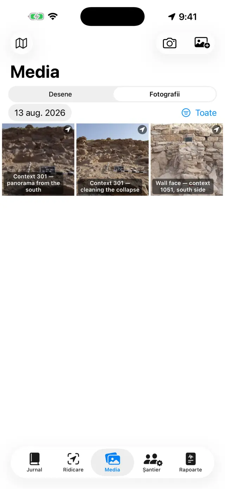
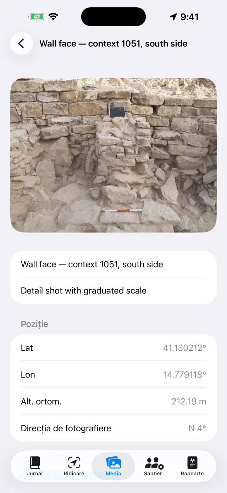
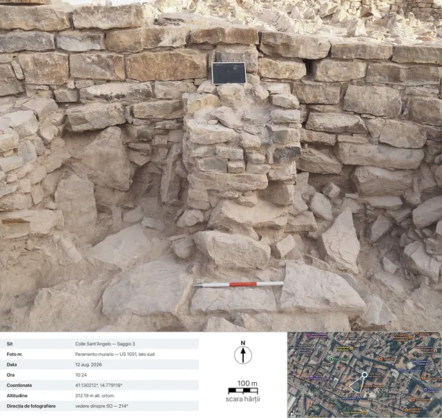
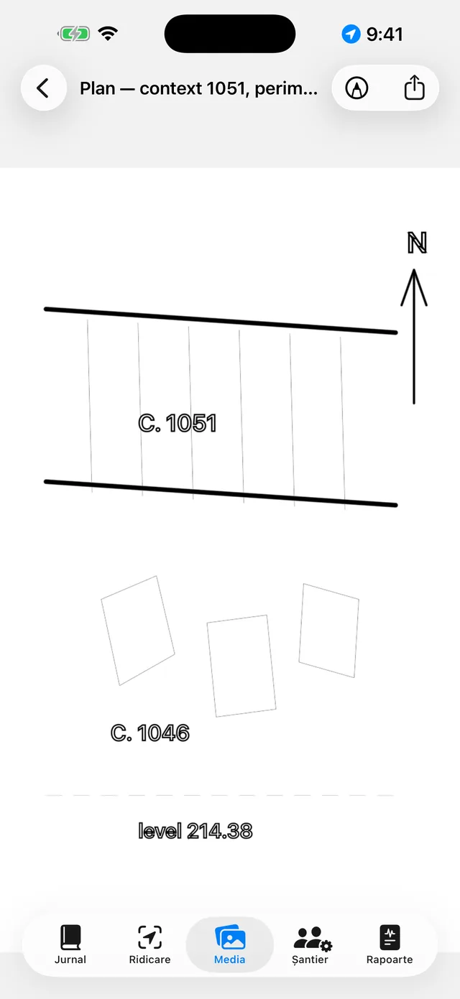
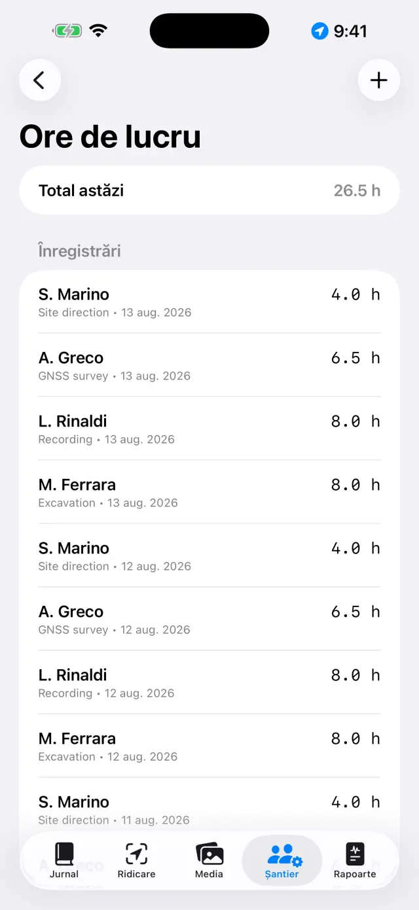
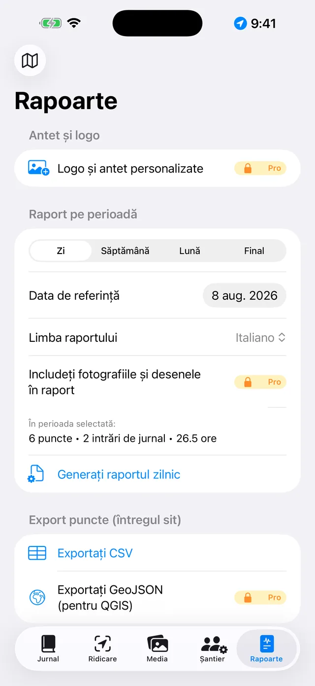

Jurnalul digital de săpătură pentru iPhone și iPad. 100% offline: datele dumneavoastră rămân pe dispozitiv.
📱 Android: descarcă aplicația (APK, gratuită). Prima dată Android cere permisiunea de instalare din Chrome sau Fișiere; apoi aplicația propune singură actualizările.
❤️ Susține proiectul — Giornale di Scavo este gratuită, fără reclame și fără abonamente, iar eu o dezvolt în timpul liber. Dacă îți este utilă pe șantier, poți susține dezvoltarea ei cu o donație.
Totul se bazează pe o singură idee: fiecare zi de săpătură este o
pagină care se completează singură. Înregistrați lucrurile acolo unde
se petrec — un punct GNSS în Ridicare, o fotografie în Media, orele în
Șantier — iar pagina zilei din Jurnal le adună pe toate automat. La
sfârșitul săptămânii sau al săpăturii, rapoartele se generează singure
pornind de la pagini.
O zi obișnuită
DimineațaDeschideți pagina zilei, notați vremea și jurnalul (sau rostiți-l cu Dictați)
EchipaÎn Șantier înregistrați cine este prezent și orele fiecăruia
RidicareAchiziționați punctele GNSS; verificați un reper dacă folosiți RTK
FotografiiFotografiați din Media: coordonatele se atașează singure
DeseneDecalcați secțiunea sau planul pe o fotografie (calc digital)
USActualizați fișele US săpate și relațiile lor: US
MaterialeCu lăzile în față, înregistrați ce a ieșit din săpătură: Șantier → Materiale
SearaDin fila Rapoarte generați raportul zilnic: un PDF gata de trimis
Primii pași
La prima pornire găsiți deja un sit demonstrativ. Pentru a crea unul
propriu, atingeți numele sitului din partea de sus (pictograma 🗺)
→ Sit nou… și dați-i un nume (de ex. „Colle Sant'Angelo —
Sondaj 3”).
Numele sitului activ este mereu vizibil în partea de sus: toate filele
afișează datele acelui sit. Pentru a schimba situl, atingeți din nou numele:
lista se află sub titlul „Siturile dumneavoastră”, iar cu Redenumiți situl… corectați un nume fără să pierdeți nimic.
Acordați permisiunile atunci când vă sunt cerute: locație
(pentru puncte), cameră (pentru fotografii), microfon
(pentru dictare), Bluetooth (doar dacă folosiți un receptor extern).
Cele șase file
📓 Jurnal
Atingeți o zi pentru a-i deschide pagina: jurnalul, vremea, echipa,
punctele, fotografiile și desenele acelei zile sunt deja acolo.
Scrieți jurnalul sau atingeți Dictați și vorbiți: transcrierea
are loc pe dispozitiv și funcționează și fără rețea.
Vremea se scrie manual (de ex. „Senin, 28 °C, vânt slab”) sau se preia cu
Preluați, care cere condițiile de moment serviciului meteorologic
norvegian. Este nevoie de rețea și funcționează doar pentru ziua de azi:
vremea de ieri nu mai poate fi recuperată. O a doua atingere după-amiaza
adaugă o nouă măsurătoare. Ceea ce scrieți manual are întotdeauna prioritate.
La preluare, de pe dispozitiv iese doar poziția zonei rotunjită la
aproximativ 11 metri, iar în rapoarte rândul apare în limba raportului.

Lista zilelor

Pagina unei zile
🧱 US — fișe stratigrafice
O fișă pentru fiecare unitate stratigrafică, cu relațiile dintre US
înregistrate ca legături: de aici ies fișele US ale documentației și matricea
Harris.
În fila US atingeți +: aplicația propune numărul
următor (îl puteți schimba) și cere tipul și definiția. Numărul este unic în
sit; mai târziu îl schimbați cu Schimbă, iar lăzile cu acea
proveniență îl urmează.
Fișa reunește identificarea (tip, subtip, definiție, zonă sau sector,
carou, secțiune, metodă de săpătură: manuală, mecanică sau
Nesăpată pentru US documentate, dar nesăpate), dimensiunile și
cotele (lungime, lățime, grosime, cotă minimă și maximă), descrierea (culoare,
Munsell, tip de sediment, consistență, componente, structura depozitului și trei
întrebări da/nu: Sigilată, Alterare superficială,
Bioturbație), materialele prezente, interpretarea (activitate, fază,
datare, elemente de datare), datele de deschidere și de închidere și
responsabilul. Se salvează singură în timp ce scrieți. Jos găsiți și
fotografiile și punctele de ridicare care numesc US în titlu, în nume sau în
notă („US 102 dinspre nord”).
Lângă definiție, culoare, tip de sediment, consistență, componente,
materiale prezente, interpretare, activitate și datare se află butonul
tezaurului (cărticica): alegeți din lexicul standard sau din
termenii dumneavoastră, iar fișa rămâne uniformă între cei care sapă. La
componente și la materiale se pot alege mai mulți. Dacă termenul căutat nu
există, foaia propune să-l adăugați. Termenii dumneavoastră sunt valabili
pentru toate siturile și se gestionează din Tezaur, în meniul ⋯ al
filei US. Tot acolo alegeți și Cronologia sitului:
Mediteraneeană sau Golful Arabic (DCT), cu perioadele
fișei DCT (Hafit, Umm an-Nar, Wadi Suq…) propuse la datare.
Adaugă relație: alegeți relația (acoperă, taie, umple, se
sprijină pe, legată de, egală cu, și inversele lor) și scrieți numărul
celeilalte US. Relația se înregistrează o singură dată și apare inversată în
cealaltă fișă: dacă 101 acoperă 102, în fișa 102 citiți „acoperită de 101”.
Dacă cealaltă US nu are încă o fișă, aceasta este creată goală. O relație care
contrazice secvența deja înregistrată este refuzată, cu explicația.
Secțiunea materialelor arată lăzile a căror proveniență numește US
(„US 102”, „USM 12”): nu este nimic de legat de mână.
Adaugă material deschide fișa materialului cu proveniența deja
scrisă.
Din meniul ⋯, Matricea Harris desenează secvența din relații:
US cea mai recentă sus, US egale sau legate într-un singur chenar, tăieturile
cu linie întreruptă, cele de zidărie pe fond gri. Se mărește cu două degete și
se partajează ca imagine.
Fișa tipărită: într-o fișă, butonul de partajare de sus
oferă Fișa în PDF și Fișa în DOCX (Word); din meniul ⋯ al
listei, Toate fișele în PDF și
Toate fișele în DOCX (Word) pun toate US ale sitului într-un singur
fișier, câte una pe pagină. Este formularul de arhivă: tabele cu câmpurile,
relații, materiale, logo-urile și antetul raportului, în limba aleasă pentru
rapoarte.
Survey123 / DCT: Exportați CSV (fișa US DCT)
scrie un CSV cu aceleași coloane și aceleași coduri ca formularul Survey123 al
fișei DCT, gata de predat sau de încărcat.
Importați CSV (fișa US DCT)… face invers: citește un CSV exportat
din Survey123 (sau din aplicație) și creează fișele cu relațiile lor. US care
au deja o fișă în sit rămân neschimbate, iar la final aplicația spune câte fișe
și câte relații a adăugat. Dacă în fișier există perioadele Golfului,
cronologia sitului trece la Golful Arabic (DCT).
📍 Ridicare
Panoul din partea de sus arată poziția în timp real: coordonate,
altitudini, precizia și tipul de fix (GPS / RTK Float / RTK Fix).
Dacă folosiți un jalon, setați Înălțimea antenei (m):
altitudinea punctului este redusă automat la sol.
Atingeți Achiziționați punctul. Numele este progresiv (P001,
P002…), dar puteți introduce unul propriu (de ex. „US 102 — fundul gropii”)
și adăuga o notă.
Comutați între Listă și Hartă pentru a vedea
punctele la fața locului; din hartă puteți activa cadastrul sau un alt
serviciu WMS.
Reperele (🏁) au propria lor secțiune: importați-le din CSV sau
creați-le, apoi deschideți Verificare în timp real și urmăriți
abaterile ΔN/ΔE/ΔZ cu vârful jalonului pe bornă, înainte de a începe
ridicarea.
Sub Carnete de nivelment se află carnetul de teren pentru
nivela optică: stații, citiri înapoi și înainte, altitudini calculate pornind
de la un reper de plecare, cu controlul de închidere. Punctele nivelate intră
în sit cu altitudinea lor, la fel ca cele GNSS.
Pe dispozitivele cu scaner LiDAR (iPhone Pro de la 12 în
sus, iPad Pro) apare Măsurare 3D:
încadrați încet până când suprafața se reconstruiește, apoi atingeți cele două
puncte de măsurat și citiți distanța, distanța orizontală și diferența de
nivel. Cu Ancorați la un reper alegeți un reper cu altitudine
cunoscută și îi atingeți punctul de pe teren: de atunci înainte fiecare
măsurătoare aduce și altitudinea ortometrică a celor două capete.
Fixați ține măsurătoarea în scenă, Anulați măsurătoarea o
aruncă, Trece în jurnal face din ea un text pe care îl corectați
înainte de a confirma. Este o măsură optică, iar aplicația o spune scriind
„LiDAR ±cm”: folosește la o diferență de nivel sau la o lungime luată în grabă
pe loc, și nu înlocuiește nici GNSS-ul, nici nivela. Pe dispozitivele fără
scaner butonul nici nu există.
Sub panou se află Înregistrări NMEA: fluxul brut al receptorului
extern ajunge singur în fișiere — înregistrarea
pornește când aprindeți antena și se închide când o stingeți, fără să fie
nevoie să vă amintiți de ea. Folosește la recitirea unei zile îndoielnice sau
la predarea datelor brute celui care face post-procesarea. Fișierele se
distribuie și se șterg, în afară de cel al înregistrării în curs; lista se
deschide și cu receptorul stins, așa că fișierele de ieri rămân la îndemână.

Panoul GNSS al Ridicării

Puncte și repere pe hartă
Fiecare punct salvează ambele altitudini:
elipsoidală și ortometrică (alt. ortom.). Cu GPS-ul intern al telefonului,
altitudinea ortometrică poate să nu fie disponibilă: este nevoie de un
receptor extern (vedeți mai jos).
📷 Media
Fotografiați cu butonul camerei sau importați din galerie.
Fotografiile primesc un nume progresiv (F001, F002…) și sunt
georeferențiate cu ultima poziție GNSS disponibilă.
La declanșare, aplicația înregistrează și direcția de
fotografiere de la busolă: în detaliile fotografiei și în rapoarte
veți citi „vedere dinspre SO — 214°”, iar pentru fotografiile verticale
(plan, fundul unei US) apare mențiunea zenitală cu direcția marginii de sus.
Dacă busola este perturbată, aplicația vă avertizează.
Atingeți o fotografie pentru titlu și note (de ex. „US 102 dinspre nord”).
Distribuiți fișa generează
fișa fotografică de documentare: fotografia cu datele de
sub ea (sit, număr, dată și oră, coordonate, altitudine, direcție), o vedere
din satelit cu marcatorul de poziție și conul de vizare, bara scării hărții
și săgeata nordului. Harta necesită rețea: fără ea, fișa este generată
oricum, cu panoul de date extins.
Scară virtuală așază pe fotografie reperele pe care pe teren nu
le-ați avut. Mai întâi Calibrați fotografia: atingeți cele două
capete ale unei distanțe cunoscute — o diviziune a riglei, latura unei
cărămizi — și o declarați în centimetri. Apoi puneți ce vă trebuie:
Riglă de scară 5 cm, Riglă de scară 10 cm sau
Riglă de scară 20 cm, Jalon 50 cm, Jalon 1 m
sau Jalon 2 m, Pătrat 10×10 cm,
Cruce de referință și Săgeata nordului. Fiecare element
are înfățișarea lui (Bară plată, Jalon real,
Riglă cu repere), mărimea, grosimea și rotația lui; ca să mutați
unul, țineți-l apăsat și trageți-l — așa ciupitul pentru mărire
nu îl mută din greșeală.
Adăugați o măsurătoare măsoară pe fotografie o distanță oarecare
din două atingeri. Numărul nu se salvează niciodată: dacă recalibrați, toate
etichetele se rescriu singure. La fotografiile verticale făcute cu aplicația,
săgeata nordului se naște deja orientată după azimutul înregistrat, iar
raportul o spune; dacă o rotiți dumneavoastră, mențiunea devine „declarat”. Cu
Distribuiți cu scară iese o copie a fotografiei cu tot ce ați așezat
pe ea — Distribuiți fotografia rămâne originalul gol, cu EXIF-ul
lui.
Prelucrare în serie (meniul de sus
din Media) ia un grup de fotografii din bibliotecă și le trece pe
toate prin numărat și măsurat, una după alta: fiecare fotografie devine o
fotografie a sitului cu data declanșării, iar fiecare va avea fișa ei
nouă de material de confirmat. Ecranul rămâne aprins pe toată durata
seriei. Dacă ieșiți sau o întrerupeți, fotografiile deja gata rămân în ciornă,
iar Reia seria pornește de unde a rămas. La final, revizuirea vă dă
fișele una câte una: corectați proveniența, categoria și cantitatea și
confirmați.

Galeria foto

Detaliile unei fotografii: coordonate, altitudine și direcția de fotografiere

Fișa exportată: datele fotografiei, vederea din satelit cu conul de vizare, bara scării hărții și săgeata nordului
🧮 Numărați și măsurați (în Media)
Tava cu fragmente fotografiată de sus, iar aplicația le numără și le măsoară
singură. Trăiește pe fotografia unui material: o deschideți
din fișa lui și atingeți Numărați și măsurați.
Mai întâi scara. Aplicația caută singură rigla de scară din
fotografie: dacă o găsește vă spune câte căsuțe a citit, dumneavoastră
declarați cât măsoară o căsuță (1, 2, 5 sau 10 cm) și atingeți
Folosiți propunerea. Dacă nu o găsește, atingeți manual cele două
capete ale unei distanțe cunoscute. Puteți alege și Nu calibra:
atunci se numără doar, iar aplicația scrie că măsurătorile lipsesc — nu le
inventează.
Modelul decupează toate formele din fotografie: poate dura câteva zeci de
secunde. Ceea ce apare este o propunere, nu un rezultat: o
atingere exclude o formă, alta o readuce. Unește contopește
într-una singură formele care sunt aceeași piesă ruptă în două;
Limitați la o zonă vă lasă să desenați cu degetul marginea tăvii,
iar căutarea rămâne înăuntru; Trecere fină reia doar acolo unde nu
găsise nimic. Formele suspecte — cele care par fundal,
prelata, umbra — se grupează și se exclud dintr-o singură mișcare.
Cu Materialul formei atingeți o piesă și spuneți ce este;
Material pentru toate îl dă tuturor deodată, ori doar celor rămase
fără. Propune materialul cere modelului de pe dispozitiv să îl
ghicească: este o propunere de verificat, iar alegerea dumneavoastră câștigă
întotdeauna.
Înainte deschide fișa de confirmare cu textul deja scris:
numărătoarea, măsurile (latura mare × latura mică, în această ordine) și
declarațiile oneste — „dintre care N fără o măsură fiabilă” atunci când o formă
nu se lasă măsurată. Dacă în fotografie există o etichetă,
aplicația încearcă să o citească și v-o spune de fiecare dată: fie
„Etichetă citită: …”, fie „Niciun text lizibil în fotografie”.
Comutatoarele apar doar acolo unde este un loc gol de umplut:
Utilizați numărul ca cantitate, Utilizați ca siglă,
Utilizați ca proveniență. Ceea ce ați scris dumneavoastră nu se
suprascrie niciodată, iar notele se lungesc: o a doua rundă se
așază după prima, nu în locul ei. Textul se poate modifica: în note intră ceea
ce citiți acolo.
Apoi, în detaliile fotografiei, Numere pe forme arată sau
ascunde numerele mici — și așa cum le vedeți acolo ies și în distribuiri, și în
rapoarte. Atingeți o formă ca să aflați cine este: „7: 4,2×2,8 cm”. Dacă
fotografia nu este calibrată, eticheta o spune, în loc să dea un număr.
Măsura este valabilă în planul celor două
puncte pe care le-ați calibrat: fotografia trebuie făcută vertical, cu tava
paralelă cu senzorul. Referința declarată este de ±2 mm la piesele bine
încadrate; un fragment în picioare sau pe marginea fotografiei este în afara
acestei înțelegeri.
✏️ Desene (în Media)
Creați o planșă nouă și alegeți o fotografie a sitului ca fundal: este
foaia dumneavoastră de calc digitală. Un desen poate continua pe parcursul
mai multor zile. Puteți și să nu o puneți, fotografia: pe foaia de calc albă
se desenează la fel de bine.
Decalcați straturile, secțiunile și pietrele cu degetul sau cu Apple
Pencil. Ciupiți pentru a mări (până la 6×, atingere dublă cu
două degete pentru a reveni la 1×). Dacă fotografia vă acoperă trăsătura,
alegeți din meniul camerei Opacitatea fundalului… și duceți-o unde
aveți nevoie, de la 5% la 100%: se estompează fotografia, nu desenul. Alegerea
rămâne pe planșă și este valabilă și în PDF, DOCX, PNG și în
Exportați cu legendă.
Tot restul se află sub Instrumente (cheia fixă din bară), care
este cuprinsul celor șapte moduri: Casetă de text,
Calchiere,
Scara fotografiei, Punct cu altitudine,
Hașură, Stilul liniei și Scară virtuală. Se
ține unul singur o dată: bifa
arată care, iar cât timp este aprins degetul nu desenează, ci comandă acel
instrument — pentru a reveni la desen, atingeți din nou opțiunea bifată. Cele
trei moduri care lucrează pe imagine (decalcul, scara, punctul cotat) apar
numai dacă există o fotografie de fundal.
Cu Casetă de text puneți etichetele (de ex. „US 1002”): se pot
muta, se redimensionează prin ciupire și aveți patru fonturi din care puteți
alege.
Calchiere recunoaște conturul
obiectului pe care îl atingeți (o piatră, limita unui strat) și îl transformă
în trăsătură: culoarea, grosimea și stilul liniei se schimbă fără a ieși din
mod, iar contururile ies netede, nu în trepte. Totul se petrece pe dispozitiv,
fără rețea.
În interiorul decalcului, Calchiați tot face singur turul întregii fotografii. În foaia
de pornire hotărâți veșmântul — Doar contururi, ori o hașură și
poate un Voal de culoare — și apăsați Porniți: bara
spune unde a ajuns, iar treaba durează câteva zeci de secunde. Ceea ce apare
este o previzualizare, nu desenul: o atingere în interiorul
unei forme o exclude, alta o readuce (între forme suprapuse câștigă cea mai
mică de sub deget), Trecere fină reia doar acolo unde nu găsise
nimic, iar Aplicați pune pe desen ceea ce a rămas. Până nu aplicați,
planșa rămâne neatinsă.
Cu instrumentul Scara fotografiei (riglă) atingeți cele două
capete ale unei măsurători cunoscute — un segment al mirei topografice — și
scrieți distanța reală: fotografia obține scara, iar de atunci exporturile
vorbesc în metri.
Cu Punct cu altitudine puneți pe fotografie crucea unui punct
GNSS al sitului (sau un punct introdus manual): numele, cota și coordonatele
apar într-o etichetă care poate fi trasă, cu o linie de indicație. Ciupiți pe
eticheta selectată pentru a o micșora sau a o mări, atunci când valorile
acoperă desenul.
Hașură umple formele: atingeți în interiorul
unei forme închise și aceasta se umple. Există cele zece hașuri de convenție —
Zidărie / piatră, Cărămidă, Mortar / tencuială, Argilă, Silt, Nisip,
Pietriș, Cărbune / cenușă, Rocă naturală,
Lemn — și Voal de culoare (o culoare cu opacitatea ei),
singure sau împreună. Dacă o formă se află în interiorul alteia câștigă cea
mai mică de sub deget; Eliminați umplerea o curăță. Nu e nevoie de
fotografie: umplerea lucrează pe formele desenate, deci merge și pe foaia de
calc albă.
Stilul liniei îmbracă o linie deja desenată:
o atingeți și alegeți între Continuă, Întreruptă,
Punctată și Linie-punct, reglând grosimea.
Desenează cu acest stil face ca trăsăturile următoare să se nască
deja îmbrăcate; Elimină stilul readuce linia plină. Nu este un
efect al ecranului: liniuțele sunt segmente adevărate și rămân așa în PDF,
DOCX, PNG, SVG și DXF.
Scară virtuală aduce pe planșă aceleași repere ca la
fotografii: riglă de scară, jalon, pătrat, cruce, săgeata nordului și
măsurători din două atingeri. Tipurile metrice cer ca planșa să aibă o scară,
adică Scara fotografiei: fără o distanță cunoscută, aplicația
explică în loc să deseneze. În SVG și DXF aceste
elemente ies ca vectori, pe stratul lor, iar măsura citită cu
rigla din GIS se potrivește cu eticheta.
Exportați cu legendă: imaginea
iese cu o bandă albă dedesubt — bara metrică (dacă există scara), săgeata
nordului pentru fotografiile verticale, „vedere dinspre” pentru cele
frontale.
Exportați vectorial: SVG pentru
desen, sau DXF pentru GIS. Cu cel puțin două puncte cotate
cu coordonate pe o fotografie verticală, DXF-ul iese georeferențiat
în UTM și în QGIS se poziționează singur pe glob; cu doar scara,
iese în metri locali; fără niciuna dintre acestea, aplicația vă anunță și nu
produce un fișier fără unități. SVG-ul face excepție la opacitate:
încorporează fotografia originală ca atare, așa că fundalul estompat iese
acolo la putere maximă.
Când ați terminat, ascundeți fotografia: rămâne desenul curat, gata pentru raport.

Foaia de calc digitală
👷 Șantier
Înregistrați prezențele zilei: numele, ocupația și orele fiecăruia.
Țineți inventarul echipamentelor și cui îi sunt atribuite.
Sub Materiale se află registrul a ceea ce iese din săpătură, cu
numărul rândurilor deja înregistrate scris sub nume.

Prezențe și ore
📦 Materiale (în Șantier)
Momentul adevărat nu este camera foto: este să vă așezați la sfârșitul zilei
cu lăzile în față și să le treceți una după alta, obosit și cu mâinile murdare.
Tot ce se află aici este făcut pentru acel moment.
Șantier → Materiale → +. Fișa se deschide
deja cu data de azi și cu ultima proveniență folosită: de la al
doilea rând încolo, a înregistra înseamnă aproape numai a atinge. Câmpul propune
proveniențele deja folosite pe situl acela.
Câmpurile sunt în ordinea în care se completează cu adevărat:
Proveniență (de ex. „US 102”), Categorie,
Cantitate împreună cu Unitate (fragmente, piese, pungi,
lăzi, grame), sigla lăzii sau a pungii, Stare
(De spălat, Spălat, Marcat,
Predat), note și dată.
Categoriile propuse sunt unsprezece — Ceramică,
Cărămidă, Oase de animale, Oase umane,
Metal, Sticlă, Industrie litică,
Mortar și tencuială, Lemn, Probe,
Altele — dar puteți scrie una a dumneavoastră („Tencuială
pictată”): va rămâne cuvântul acela în orice limbă, pentru că aplicația traduce
doar opțiunile propuse de ea.
Cantitatea poate rămâne goală: un rând poate spune „a ieșit și lucrul
acesta” fără a-l număra, iar în exporturi celula aceea rămâne goală, niciodată
zero.
Fotografiile fișei se fac cu Faceți o fotografie, se iau cu
Din bibliotecă sau cu Din sit, care pescuiește dintre
fotografiile deja aflate în galerie pe cele care nu au încă o fișă. Sunt
aceleași fotografii din Media: ștergerea unui material
nu șterge și fotografiile lui, care pierd doar legătura.
În pagina zilei, secțiunea Materiale apare numai dacă în ziua
aceea ați înregistrat ceva. Trece în jurnal propune rândul de
sinteză, grupat pe proveniență și cu notele întregi: îl corectați și îl
adăugați la finalul jurnalului. Apăsat de două ori scrie de două ori — jurnalul
nu se rescrie niciodată singur.
📄 Rapoarte
Alegeți tipul: zilnic,
săptămânal, lunar sau final
cu anexe complete.
Alegeți limba raportului dintre șaptesprezece, independentă
de limba aplicației: raportul poate ieși în germană chiar dacă folosiți
aplicația în română.
Generați PDF-ul, sau exportați DOCX cu logo-uri și fotografii, CSV al punctelor, GeoJSON pentru QGIS.
În Antet și logo-uri scrieți antetul și alegeți unul sau mai
multe logo-uri (Alegeți logo-ul companiei, apoi
Adăugați încă un logo): apar în partea de sus a tuturor rapoartelor
și a fișelor US, în ordinea din listă, pe care o schimbați cu săgețile
Mută înainte.
La final se află Export materiale (întregul sit):
Exportați CSV materiale pentru foaia de calcul și
Exportați HTML materiale pentru un tabel cu miniaturi care se
deschide în orice browser, fără rețea. Antetele, categoriile, unitățile și
stările ies în limba aleasă pentru raport; ceea ce ați scris dumneavoastră
rămâne așa cum l-ați scris. În raportul final, materialele au anexa lor, pe
proveniențe.
US intră în rapoarte: cele deschise și închise în perioada respectivă în
raportul zilnic, săptămânal și lunar; în raportul final există anexa cu toate
fișele, matricea Harris și un tabel rezumativ al US (număr, tip, definiție,
datare, acoperă, acoperită de).
Cu fotografiile din rapoarte activate, puteți alege Fișe fotografice în locul fotografiilor: fiecare fotografie
intră în PDF și în DOCX ca o fișă de documentare completă, cu date și hartă,
în limba raportului.

Generarea rapoartelor
Receptor GNSS extern și NTRIP
Cu un receptor extern (antenă cu precizie centimetrică), aplicația atinge
precizia RTK. GPS-ul intern rămâne mereu disponibil ca soluție de rezervă.
Porniți receptorul și activați Bluetooth-ul telefonului.
În Ridicare alegeți sursa poziției: GNSS extern
(BLE/NMEA) și selectați receptorul
dumneavoastră din listă. Sunt acceptate și receptoarele MFi,
precum și cele care transmit NMEA prin rețea.
Pentru corecțiile RTK configurați NTRIP: adresa
caster-ului, portul, mountpoint-ul, utilizatorul și parola (rămân în
portofelul de chei al dispozitivului). Aplicația trimite poziția
dumneavoastră către caster și primește corecțiile.
Așteptați trecerea la RTK Fix: precizie centimetrică.
Verificați pe un reper înainte de a începe.
Acolo unde telefonul nu are semnal există și calea
fără internet: o bază înfiptă într-un punct cunoscut și un
rover care își trimit corecțiile prin radio LoRa, fără caster
și fără cartelă SIM (kit RTK DFRobot cu punte ESP32). Pentru aplicație nu se
schimbă nimic — primește de la receptor un NMEA deja corectat — iar montarea
punții este documentată separat, în README-ul ei: acesta rămâne un ghid al
aplicației, nu un manual de firmware.
Copie de siguranță și schimb
Din meniul sitului atingeți Exportați situl (.zip): înăuntru
este totul — jurnalul, punctele, fotografiile, desenele, orele, reperele, materialele și fișele US.
Păstrați arhiva ZIP unde doriți (Fișiere, Drive, e-mail…). Este copia
dumneavoastră de siguranță: aplicația nu are cloud, în mod deliberat.
Importați situl (.zip)… recreează situl pe alt dispozitiv,
chiar și între iPhone și Android. Importul nu suprascrie și nu combină
niciodată: creează întotdeauna un sit nou alături de ale dumneavoastră, cu
„(importat)” în nume dacă aveți deja unul la fel.
⚠️ Ștergeți situl… elimină situl împreună cu tot
conținutul său și este ireversibil: exportați mai întâi o
arhivă ZIP dacă aveți dubii.
Gratuită
Giornale di Scavo este gratuită și completă: toate
funcțiile descrise în acest ghid sunt incluse, fără abonamente, fără achiziții
în aplicație și fără filigran, cu situri nelimitate.
Rezolvarea problemelor
Receptorul Bluetooth nu apare sau nu se conectează
Verificați, în ordine:
receptorul este pornit și nu este deja conectat la o altă aplicație sau la un alt telefon;
Bluetooth-ul sistemului este activ, iar aplicația are permisiunea
Bluetooth (Setări → Giornale di Scavo);
sursa aleasă în Ridicare este GNSS extern (BLE/NMEA);
opriți și reporniți receptorul, apoi căutați din nou.
Nu ajung niciodată la RTK Fix
Este nevoie de o conexiune NTRIP activă: verificați caster-ul,
mountpoint-ul și datele de conectare.
Verificați acoperirea de date a telefonului: corecțiile circulă prin internet.
Cerul deschis contează: copacii deși și pereții apropiați degradează
semnalul. Cu o acoperire slabă, puteți rămâne în RTK Float (precizie decimetrică).
Alegeți un mountpoint apropiat (< 30–40 km) sau o rețea VRS.
NTRIP nu se conectează
Verificați adresa și portul (adesea 2101) și că mountpoint-ul există:
multe caster-e publică lista (sourcetable).
Un utilizator sau o parolă greșite dau eroarea 401/403: verificați din
nou datele de conectare.
Unele rețele necesită trimiterea poziției (GGA): aplicația o face
singură, dar receptorul trebuie să aibă deja un fix.
Altitudinea ortometrică este goală sau zero
GPS-ul intern al telefoanelor oferă doar altitudinea elipsoidală.
Altitudinea ortometrică (alt. ortom.) provine din fraza GGA a unui receptor
extern. Fără receptor, punctele salvează totuși altitudinea elipsoidală.
Dictarea nu funcționează
Verificați permisiunea de microfon și recunoașterea vocală din Setări.
Transcrierea are loc pe dispozitiv: prima dată, sistemul poate avea
nevoie să descarce modelul limbii (este nevoie de rețea o singură dată, apoi
funcționează offline).
Vorbiți în propoziții scurte; textul se adaugă la finalul jurnalului.
Harta cadastrală (WMS) nu se vede
Aplicația este offline, dar straturile WMS sunt servicii web: au nevoie
de o conexiune și de un serviciu activ. Cadastrul italian este preconfigurat;
pentru alte țări introduceți endpoint-ul WMS al serviciului național (trebuie
să accepte EPSG:3857). În afara acoperirii de date, harta de bază și
punctele rămân vizibile.
Fotografiile nu au coordonate
Fotografia preia poziția de la ultimul fix GNSS: deschideți mai întâi
Ridicarea și așteptați ca poziția să fie obținută, apoi fotografiați. Cu
permisiunea de locație refuzată, fotografiile se salvează fără coordonate.
Lipsesc fotografiile sau logo-ul din raport
Verificați că este activat Includeți fotografiile și desenele în raport
și că cel puțin un logo este ales în Antet și logo-uri: se aplică
atât la PDF, cât și la DOCX, iar logo-urile și la fișele US tipărite.
Am șters un sit din greșeală
Ștergerea este definitivă: datele nu pot fi recuperate (nu există cloud).
Dacă ați exportat anterior o arhivă ZIP, importați-o pentru a restaura situl
la acea dată. Sfat: exportați o arhivă ZIP la sfârșitul fiecărei zile.
„Preluați” este dezactivat sau afișează „Vreme indisponibilă”
dacă butonul este dezactivat, vă aflați pe pagina unei zile trecute:
vremea poate fi preluată doar în ziua de azi;
dacă apare „Vreme indisponibilă”, lipsește rețeaua sau situl nu are
încă un punct GNSS din care să preia poziția — înregistrați un punct și
încercați din nou.
Fișa fotografică iese fără hartă
Vederea din satelit provine de la Apple și necesită rețea: aplicația
așteaptă până la 15 secunde, apoi generează fișa fără hartă (datele nu
așteaptă rețeaua). Pe rețele lente de pe șantier poate dura toată așteptarea:
încercați din nou pe Wi-Fi. Fără geotag pe fotografie, harta lipsește prin
definiție.
„Calchiați tot” nu găsește nimic, sau găsește prea mult
turul lucrează pe fotografia de fundal: fără fotografie comanda nici nu
există, iar cât timp se citește „Se pregătește fotografia…” modelul încă nu
este gata — așteptați;
dacă formele sunt puține, apăsați Trecere fină: reia cu o rețea
mai deasă doar acolo unde primul tur nu văzuse nimic și adaugă ce găsește,
fără să repună ceea ce excluseserăți;
dacă sunt prea multe, nu aplicați tot: în previzualizare atingeți formele
de prisos pentru a le exclude una câte una, apoi Aplicați. Ceea ce
excludeți nu ajunge pe desen;
fotografiile plate — contrast slab, lumină de amiază, teren de aceeași
culoare peste tot — dau puține contururi, în mod firesc: acolo merită decalcul
la o singură atingere, care știe unde vă uitați;
dacă rămâne plin de forme mărunte, încercați din nou cu Doar contururi: se citesc mai bine, iar hașura se poate întinde oricând după
aceea, de mână.
Trăsătura nu se lasă îmbrăcată
atingerea caută linia cea mai apropiată pe o rază cât un vârf de deget:
dacă trăsătura este subțire sau zona aglomerată, măriți și
atingeți mai precis, chiar deasupra cernelii;
se îmbracă numai trăsăturile. Umplerile, casetele de text
și crucile punctelor cotate nu sunt linii și nu răspund sub deget;
dacă apare „Acestei linii nu i se poate schimba stilul”, printre liniile
adunate de atingere se află una care linie nu este: punctulețul lăsat de o
atingere pe loc, sau o trăsătură venită stricată dintr-o arhivă importată.
Ștergeți punctulețul și încercați din nou, ori atingeți linia într-un loc
departe de el. Un punctuleț singur nu se îmbracă și gata: nu ai cum să faci o
linie întreruptă dintr-un punct;
dacă între atingere și Aplicați ați anulat sau ați desenat
altceva, selecția se desface singură ca să nu îmbrace trăsătura greșită:
atingeți din nou linia și reluați.
Hașura nu apare când ating în interiorul formei
forma trebuie să fie închisă, și închisă dintr-o
singură trăsătură: porniți și reveniți aproape în același
punct fără să ridicați degetul (câțiva milimetri de abatere sunt tolerați).
Două linii care se ating la capete rămân două linii deschise, iar a umple o
planșă dincolo de o margine pe care nu a desenat-o nimeni ar fi mai rău decât
a nu o umple deloc;
contururile produse de Calchiere sunt închise prin construcție:
acelea se umplu întotdeauna;
dacă formele sunt una într-alta, atingerea o ia pe cea mai
mică care o cuprinde — ca să umpleți forma mare, atingeți într-un
punct care rămâne în afara celor mici;
ați atins în interiorul formei, nu pe marginea ei? Ținta este suprafața,
nu linia.
DXF-ul este respins, sau se deschide „lângă origine” în GIS
pentru DXF-ul georeferențiat este nevoie de o fotografie
verticală făcută cu camera aplicației și de cel puțin două puncte
cotate cu coordonate bine distanțate pe fotografie;
cu doar scara mirei topografice, DXF-ul iese în metri
locali: este corect, dar GIS-ul îl arată lângă origine — aplicația
vă anunță în prealabil;
fără scară și fără puncte, exportul este refuzat: un DXF fără unități de
măsură nu ar putea fi citit în mod util de niciun GIS.
Am estompat fundalul, dar SVG-ul iese cu fotografia întreagă
Așa este și așa rămâne: SVG-ul poartă în el fișierul
original al fotografiei, nu o copie estompată a ei, iar deschiderea la
culoare ar însemna recomprimarea ei — adică înrăutățirea ei pentru toți cei
care deschid SVG-ul ca să lucreze. Opacitatea fundalului… este
valabilă în editor, în PDF, în DOCX, în PNG și în Exportați cu legendă. Dacă vă trebuie vectorialul fără fotografie, alegeți SVG — doar desenul; dacă vă trebuie fotografia estompată, exportați în PNG sau
treceți prin raport.
Săgeata nordului nu apare la exportul cu legendă
Săgeata apare doar pentru fotografiile verticale, făcute cu camera
aplicației, care înregistrează azimutul la declanșare. Pentru
fotografiile frontale apare mențiunea „vedere dinspre …” (o săgeată a
nordului pe planul unei fațade ar fi o minciună geometrică); pentru
fotografiile importate din galerie nu apare niciuna dintre cele două, pentru
că lipsesc datele de fotografiere.
„Numărați și măsurați” nu apare pe fotografie
Comanda trăiește numai pe fotografiile unui material —
acolo are sens decuparea fragmentelor — și se deschide din detaliile
fotografiei, nu din fișă, care arată doar miniaturile.
Rigla de scară nu este găsită
se recunosc riglele cu căsuțe — alb/negru, galben/negru,
roșu/alb — și riglele cu blocuri; cartelele de culoare și riglele netede, fără
căsuțe, nu se recunosc din principiu;
rigla trebuie să ocupe cel puțin o zecime din latura lungă a fotografiei și
să fie toată în cadru: tăiată de margine, nu se citește;
câte căsuțe a citit vă spune aplicația, dar cât măsoară o căsuță
spuneți dumneavoastră: din imagine nu se deduce, iar a o ghici ar
însemna o minciună despre scară;
dacă nu o găsește, atingeți manual cele două capete ale unei distanțe
cunoscute. Cu Nu calibra se numără doar, iar aplicația declară că
măsurătorile lipsesc.
Numărătoarea nu se potrivește cu tava adevărată
ceea ce vedeți după tur este o propunere: excludeți cu degetul rigla,
eticheta, umbrele nete și tot ce nu este un artefact, până când numărul se
potrivește cu cel numărat de mână;
dacă un fragment a fost citit ca două piese, atingeți cele două forme și
Unește: devine o singură formă, cu un singur număr;
dacă turul se uită și în afara tăvii, desenați marginea cu
Limitați la o zonă: căutarea rămâne înăuntru;
dacă lipsesc piese, Trecere fină reia doar acolo unde nu găsise
nimic, fără să repună ceea ce excluseserăți;
numărul care ajunge în note este cel pe care l-ați
confirmat dumneavoastră, nu cel propus de model.
Eticheta nu este citită sau propune altceva decât trebuie
rezultatul este întotdeauna declarat: fie „Etichetă citită: …”, fie
„Niciun text lizibil în fotografie” — tăcere nu există;
citirea automată greșește, mai ales la scrisul de mână: de aceea textul
fișei se corectează înainte de confirmare;
Utilizați ca siglă și Utilizați ca proveniență apar
numai dacă acele câmpuri sunt goale: ceea ce ați scris dumneavoastră nu se
atinge;
două etichete diferite în aceeași fotografie fac informația ambiguă, iar
atunci aplicația nu propune nimic: textul citit îl vedeți oricum, alegerea
rămâne a dumneavoastră.
Seria s-a oprit sau unele fotografii nu au intrat
fotografiile din bibliotecă care stau pe iCloud și nu au fost încă
descărcate nu se încarcă: deschideți-le o dată în aplicația Fotografii, apoi
Reîncearcă erorile;
dacă ați ieșit din aplicație sau ați întrerupt-o, fotografiile deja gata
rămân în ciornă, iar Reia seria pornește de unde a rămas, fără să
refacă ceea ce era făcut;
fotografiile importate primesc data declanșării, nu pe cea
de azi: dacă nu le vedeți, sunteți în ziua greșită — treceți la
Toate sau mergeți în ziua lor.
Rigla virtuală nu se potrivește cu rigla adevărată
Scara este valabilă în planul celor două puncte pe care
le-ați calibrat: dacă fotografia este luată pieziș, un element așezat mai
departe sau mai aproape de acel plan nu are cum să se potrivească. Fotografiați
vertical, cu planul paralel cu senzorul, și calibrați pe o distanță care se
află în acel plan. Dacă valoarea declarată era greșită,
Recalibrați: toate măsurile deja așezate se rescriu singure, pentru
că numărul nu este niciodată salvat.
„Măsurare 3D” nu apare sau măsura iese din limite
este nevoie de scanerul LiDAR: pe iPhone-urile și
iPad-urile care nu îl au butonul nici nu există, în loc să stea acolo stins,
fără explicație;
dacă apare „Suprafață încă incompletă”, reconstrucția nu s-a terminat:
mișcați-vă încet și încadrați din mai multe unghiuri înainte de a atinge
punctele;
soarele puternic și suprafețele lucioase — marmură, gresie, tencuială
vopsită — degradează citirea: rămâne o măsură optică, declarată
„LiDAR ±cm”;
dacă sesiunea se întrerupe (un telefon, aplicația pusă deoparte), o
eventuală ancorare la un reper își pierde valabilitatea, iar
aplicația o spune: mai bine o refaceți decât să păstrați cote care nu mai sunt
adevărate.